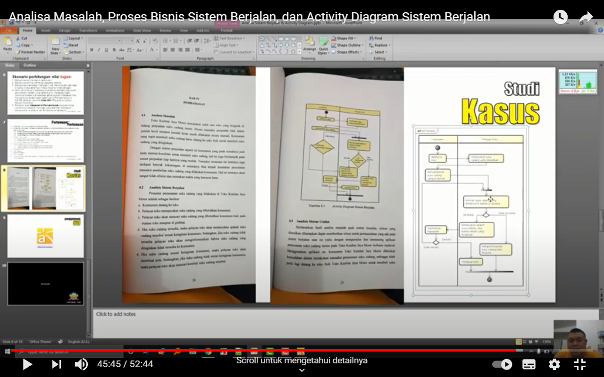

saduran pertemuan 2<br>
<br>
mahasiswa/i harus memahami membuat analisa sistem usulan<br>
mahasiswa/i dapat membuat usecase diagram dan deskripsi usecase<br>
memahami rancangan layar<br>
class diagram<br>
sequence diagram<br>
<br>

